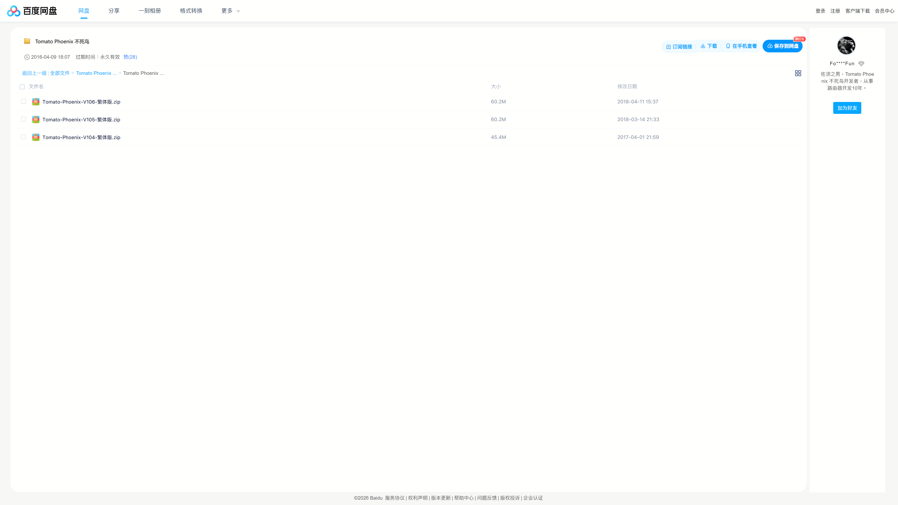
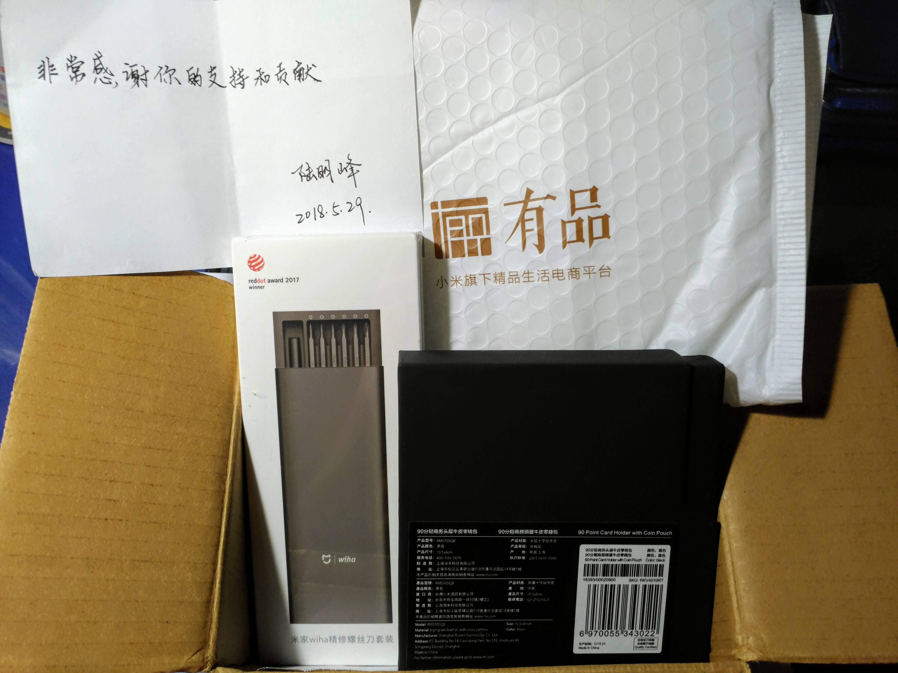

📦 開源專案精選特輯 (Repositories)
-
👉 Padavan-CAKE 雲端編譯懶人包 (入口網站)
Guide 全球首發！精準支援 142 款機型，包含完整的圖文教學與 14 種多國語言支援。一鍵雲端編譯專屬你的抗延遲神器。
-
🍰 sch_cake (The "Dave Täht Tribute" Edition)
C 獨立移植 (backport/port) 的 CAKE 演算法核心代碼。紀念 Dave Täht 緩衝膨脹緩解之魂 — "When you miss Dave, modprobe sch_cake!"
-
🟢 padavan-builder-workflow & padavan-ng (Kernel 3.4)
Actions C Padavan 3.4 經典老機專區。支援 Archer C2, MI-R3G 等經典老設備，結合自動化雲端編譯，讓舊機器也能發揮頂尖的流量調度能力。
-
🔵 padavan-4.4 (Kernel 4.4)
Actions C Padavan 4.4 進階機型專區。支援 K2P, DIR-878 等進階機型，提供極致穩定的核心與硬體加速體驗，結合自動化雲端編譯，讓舊機器也能發揮頂尖的流量調度能力。
📌 韌體版本特色速覽
- 核心突破：提供 Linux Kernel 3.4.113 與 4.4.198 雙版本，大幅領先原廠舊核心。
- 效能解放：全系列整合 CAKE 流量調度、HWNAT (硬體加速) + SFE (軟體加速)。
- 介面優化：內建繁體中文，並針對 1080P 寬螢幕進行排版優化。
- 穩定提升：修復 MT7610E 無線驅動斷線問題，啟用快速重連；4.4 版本採用最穩定的 Iptables 1.8.7 與 libmnl 1.0.5 組合。
- 安全防護：全面升級 Busybox 1.37.0，修復多個 CVE 高風險漏洞。
👉 我的全新 GitHub 首頁 (TW641)：https://github.com/TW641
👉 我的舊版 GitHub 首頁 (TWShiyuLiou1997)：https://github.com/TWShiyuLiou1997
🌍 來自國際開源界與總統級的肯定！(真正的數位國民外交)
這個專案不僅成功在台灣論壇發布，更在國際開源社群引起了巨大的迴響，這對身為唯一開發者的我來說，是極大的肯定與驚喜：
-
🇹🇼🤝🇨🇿 來自捷克的國際開源大神的親自認可：
我的 GitHub 專案成功獲得了 LibreQoS 營運長 Frantisek (Frank) Borsik 的親自追蹤與肯定！Frank 來自捷克布拉格地區，在國際開源網路界大有來頭，曾負責知名開源路由器 Turris (OpenWrt) 以及 RF elements 的核心推廣。這代表本專案已經成功打入全球「對抗 Bufferbloat (緩衝膨脹)」社群的最核心圈！能與來自友好捷克的專家交流，真的是莫大的榮幸。
-
🇹🇼🤝🇯🇵 來自日本的頂尖網路學者的跨國關注：
來自日本頂尖名校 慶應義塾大學 (Keio University) 的 Dikshie 博士 也親自給予此專案關注與認可！Dikshie 博士專攻 P2P 網路、網際網路架構與網路科學，能獲得這類精於底層網路基礎設施的重量級學者肯定，證明了這份演算法移植的技術含金量極高！
-
🇹🇼 總統級的數位國民外交：
LibreQoS 官方甚至在 X (Twitter)、Facebook 與 LinkedIn 等國際社群平台上發布貼文致敬，將這個專案譽為給 Dave Täht 的 "Time-Traveling Valentine's Gift" (穿越時空的情人節禮物)，並在文中史無前例地標註了台灣總統賴清德、前總統蔡英文與總統府發言人！能讓台灣的開源技術貢獻躍上國際版面，這真的是貨真價實的國民外交！🇹🇼
如果你也為這份「數位國民外交」感到熱血沸騰，懇請花個 10 秒鐘，點選下方的 LibreQoS 官方社群貼文連結，幫忙 按讚、留言、分享！讓這份來自台灣的跨國界致敬傳遞給全世界：
- 👉 X (Twitter) 貼文按讚分享： https://x.com/LibreQoS/status/2022688823361126545
- 👉 Facebook 貼文按讚分享： https://www.facebook.com/libreqos/posts/pfbid02JCNKynFeQ48FdBMFbVoAoWFDLfgiA55mH3Fyz76xKHdEU86XkxgVziWzXoRYbbT1l
- 👉 LinkedIn 貼文按讚分享： https://www.linkedin.com/posts/libreqos_davetaht-routers-bufferbloat-activity-7428458742301659136-YAL2
🔧 技術支援與機型總表 (Technical Details)
本區塊收錄了改善 Bufferbloat 的完整支援清單與編譯教學。
🍰 A PIECE OF CAKE！超簡單雲端編譯法 (免架環境)
這真的是 Piece of cake！我已經把所有設定都寫進 GitHub Actions 裡了。你完全不需要會寫程式，只要會點選滑鼠，幾分鐘就能得到專屬你的韌體檔！
- 向原創致敬：前往 GitHub 紀念倉庫 點亮星星 (Star) 向 Dave Täht 致敬。
- Fork 專案：根據下方表格找到代碼後，Fork 對應專案 (3.4 經典老機 或 4.4 進階機型)。
- 啟用 Actions：進入專案點選 Actions 並點選綠色按鈕啟用工作流程。
- 選擇流程：3.4 機型點選 Build firmware (Ultimate Fix...)；4.4 機型點選 Custom-Router-Build-Final-Fix。
- 開始編譯：點選右側 Run workflow 下拉選單。在 Target Model 輸入「選項代碼」，語言填入 CN (繁體中文)，點選綠色按鈕執行。
- 下載韌體：等待約 10~15 分鐘亮起綠色打勾 ✅ 後，點進流程至最下方 Artifacts 下載專屬
.bin韌體！
📜 完整 142 款支援機型總表 (點這裡展開)
🟢 Kernel 3.4 經典老爺機 (共 125 款選項)
| 品牌 (A-Z) | 支援型號：商品名稱 (選項代碼) |
|---|---|
| 5K | 5K-W20 (5K-W20) |
| A5 | A5-V11 16M (A5-V11_16M), A5-V11 4M (A5-V11_4M), A5-V11 8M (A5-V11_8M) |
| ATEL | ALR-U270 (ALR-U270) |
| ASUS (華碩) | RP-AC56 (RP-AC56), RT-AC1200 (RT-AC1200), RT-AC1200GU (RT-AC1200GU), RT-AC1200HP (RT-AC1200HP), RT-AC51U (RT-AC51U), RT-AC54U (RT-AC54U), RT-N10 C1 (RT-N10C1), RT-N11P (RT-N11P), RT-N11P B1 (RT-N11PB1), RT-N12+ (RT-N12plus), RT-N13U B1 (RT-N13UB1), RT-N14U (RT-N14U), RT-N56U (RT-N56U), RT-N56U GE2 (RT-N56U-GE2), RT-N56U B1 (RT-N56UB1) |
| BELKIN | F9K1103 (F9K1103) |
| D-Link (友訊) | DIR-300 B1 (DIR-300B1), DIR-300 B7 (DIR-300B7), DIR-320 B1 (DIR-320B1), DIR-620 A1 (DIR-620A1), DIR-620 D1 (DIR-620D1), DIR-860L (DIR-860L), DIR-882 (DIR-882) |
| GL.iNet | GL-MT300A (GL-MT300A), GL-MT300N (GL-MT300N), GL-MT300N V2 (GL-MT300NV2) |
| HiWiFi (极路由) | HC5661A (HC5661A) |
| Kroks | KNDRT31R26 (KNDRT31R26), KNDRT31R3 (KNDRT31R3) |
| Linksys | EA-8100 (EA-8100) |
| MQMaker | WiTi 256M (MQ-WITI-256), WiTi 512M (MQ-WITI-512) |
| Newifi (新路由) | Newifi D1 (NEWIFI-D1), Newifi D2 (NEWIFI-D2), Newifi Mini (NEWIFI-MINI), Newifi Y1S (NEWIFI-Y1S) |
| Nexx | WT3020A (WT3020A), WT3020H (WT3020H), WT3020H 16M (WT3020H16M) |
| Phicomm (斐讯) | PSG1218 256M (256PSG1218), PSG1218 (PSG1218) |
| Samsung (三星) | SWR1100 (SWR1100) |
| Sercomm | RT-S1010 (RT-S1010), Smartbox SPI (SMARTBOX_SPI), SMBX Pro NAND (SMBXPRONAND), SMBX Turbo (SMBXTURBO) |
| SNR | SNR-MD1 (SNR-MD1), SNR-ME1 (SNR-ME1), SNR-W4N-M (SNR-W4N-M), SNR-W4N-M USB (SNR-W4N-M_USB) |
| Totolink | A3004NS (A3004NS) |
| TP-Link | Archer C2 V1 (TL_C2-V1), Archer C20 V1 (TL_C20-V1), Archer C20 V1 16M (TL_C20-V1_16M), Archer C20 V4 (TL_C20-V4), Archer C20 V5 (TL_C20-V5), Archer C5 V4 (TL_C5-V4), Archer C50 V1 (TL_C50-V1), Archer C50 V3 (TL_C50-V3), Archer C50 V4 (TL_C50-V4), EC220-G5 V2 (TL_EC220_G5-V2), MR200 V1 (TL_MR200-V1), MR3020 V3 (TL_MR3020-V3), MR3420 V5 (TL_MR3420-V5), WDR7300 V5 (TL_WDR7300-V5), WR840N V4 (TL_WR840N-V4), WR840N V4 USB (TL_WR840N-V4_USB), WR840N V5 (TL_WR840N-V5), WR840N V5 RU (TL_WR840N-V5_RU), WR840N V6 (TL_WR840N-V6), WR841N V13 (TL_WR841N-V13), WR841N V13 USB (TL_WR841N-V13_USB), WR841N V14 (TL_WR841N-V14), WR841N V14 8M (TL_WR841N-V14_8M), WR842N V5 (TL_WR842N-V5), WR845N V3 (TL_WR845N-V3), WR845N V4 (TL_WR845N-V4) |
| Tuoshi | TS7620N (TS7620N) |
| Ubiquiti | EdgeRouter X (UBNT-ERX) |
| Unielec | U7621-06 (U7621-06) |
| Wall-AP | Wall-AP (WALL-AP) |
| Xiaomi (小米/红米) | Mi Router 3 (MI-3), Mi Router 3 SPI (MI-3_SPI), Mi Router 3C (MI-3C), Mi Router 3G (MI-R3G), Mi Router 3G SPI (MI-R3G_SPI), Mi Router 3G v2 (MI-R3Gv2), Mi Router 3 Pro (MI-R3PRO), Mi Router 3P SPI (MI-R3P_SPI), Mi Router 4 (MI-4), Mi Router 4A 100M (MI-4A_100M), Mi Router 4C (MI-4C), Mi Router Mini (MI-MINI), Mi Router Nano (MI-NANO), Xiaomi Router 2100 (R2100), Redmi Router AC2100 (RM-AC2100) |
| Youhua (友华) | WR1200JS (WR1200JS) |
| Youku (优酷) | YK-L1 (YK-L1), YK-L1C (YK-L1C) |
| ZBT | WE1326 (ZBT-WE1326), WE1626 (ZBT-WE1626), WE826-T2 (ZBT-WE826T2), WG3526 (ZBT-WG3526), WG3526-32 (ZBT-WG3526-32), WR8305RT (ZBT-WR8305RT) |
| ZTE (中兴) | E8820S (ZTE_E8820S) |
| ZyXEL (Keenetic) | KN-4G3 (KN-4G3), KN-4G3B (KN-4G3B), KN-EXTRA (KN-EXTRA), KN-EXTRA2 (KN-EXTRA2), KN-GIGA3 (KN-GIGA3), KN-LITE (KN-LITE), KN-LITE2 (KN-LITE2), KN-LITE3 (KN-LITE3), KN-LITE3B (KN-LITE3B), KN-OMNI (KN-OMNI), KN-OMNI2 (KN-OMNI2), KN-START2 (KN-START2), KN-ULTRA2 (KN-ULTRA2), KN-VIVA (KN-VIVA) |
🔵 Kernel 4.4 進階機型 (共 17 種選項)
| 品牌 (A-Z) | 支援型號：商品名稱 (選項代碼) |
|---|---|
| D-Link (友訊) | DIR-878 (DIR-878), DIR-882 (DIR-882) |
| JCG (捷稀) | 836PRO (JCG-836PRO), AC860M (JCG-AC860M), Q20 (JCG-Q20), Y2 (JCG-Y2) |
| Motorola (摩托羅拉) | MR2600 (MR2600) |
| Netgear (網件) | BZV (NETGEAR-BZV) |
| Newifi (新路由) | Newifi 3 (NEWIFI3) |
| Phicomm (斐讯) | K2P (K2P), K2P Nano (K2P-NANO), K2P USB (K2P-USB) |
| Xiaomi (小米/红米) | CR660x (CR660x), Mi Router 3G (MI-R3G), Mi Router 3 Pro (MI-R3P), Redmi Router 2100 (RM2100) |
| XiaoYu (小渔) | XY-C1 (XY-C1) |
💖 幕後故事與特別致謝 (Behind the Scenes & Credits)
這個專案的誕生，除了技術的積累，更離不開開源社群前輩們的啟發與無私奉獻。滿滿的感謝獻給以下所有人與組織：
-
🕊️ 致敬開源先驅：In Loving Memory of Dave Täht (1965–2025)
"When you miss Dave, modprobe sch_cake!"
Dave 是一位偉大的網路技術開源貢獻者。2016 年他曾預言 MT76 會是開源網路新星，但苦尋不到合適設備測試。幾年後的今天，我透過本專案讓成千上萬台基於 MediaTek (MT76) 的設備成功跑起他撰寫的 CAKE 演算法。His wish, I finished.
本專案更被 LibreQoS 官方譽為給 Dave 的 "Time-Traveling Valentine's Gift" (穿越時空的情人節禮物)，躍上國際開源社群版面。
-
💡 特別回憶錄：那些年我們一起搞的第三方固件
其實當年我是負責 Tomato Phoenix 不死鳥的繁體中文翻譯。下方附上當年 Tomato Phoenix 不死鳥的百度網盤下載連結與歷史截圖：
🔗 http://pan.baidu.com/s/1jIGpbQe
請看下方圖片！這是我當年和陆明峰、佐须之男合作時，他親手寫的感謝紙條和送的禮物。我直到今天都還留著，而且這些感謝如今都仍記在心裡！

「佐须之男长期致力于国内第三方免费固件的开发，期间靠的是广大用户的支持才能坚持到现在。一路走来的过程中有喝彩也有唏嘘，但我从未停止过脚步，并希望我能继续再坚持下去。希望广大的用户在力所能及的前提下能给予我些赞助，让这份梦想得以延续。」這不是我的帳號，但就讓我們一起幫他一把吧，感謝他多年來的開源貢獻。如果您想支持他，請前往他的官方網站：
👉 Tomato 贊助頁面 | 👉 ForgotFun 贊助頁面 -
🤝 特別致謝名單 (Special Acknowledgments)
感謝以下企業、組織、前輩與夥伴在開源精神、技術合作、無私引薦與硬體測試上的啟發與貢獻：
- 🏢 企業與組織：
- 💻 開發者與貢獻者 (按字母排列)：
- Alfie Zhao
- Allen Liu
- Dave Täht
- Frantisek Borsik (Frank)
- Jacqueline Wang
- Wingsley Yik
- 佐须之男 (ForgotFun)
-
🗣️ 恩山論壇許願池
順帶一提，最近在論壇看到有版友發帖問：恩山為什麼沒有 GL.iNet 版塊？藉著這篇技術分享，我也想在此向管理員許願：
強烈希望能開立一個 GL.iNet 專屬板塊！ 這樣大家討論相關技術跟固件會更方便集中！
👉 前往 恩山无线论坛 參與討論